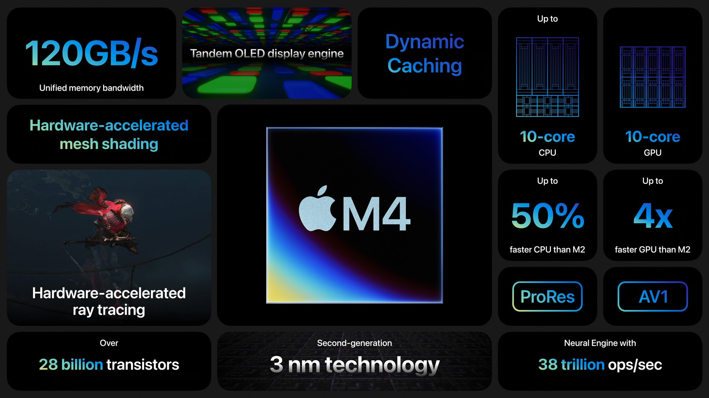

1. Giới Thiệu MacBook Air 2025: Tinh Tế Trong Từng Chi Tiết
Apple vừa chính thức ra mắt MacBook Air 2025 tích hợp chip M4, đánh dấu bước tiến mới trong hành trình cách
mạng hóa laptop mỏng nhẹ. Với thiết kế quen thuộc nhưng được nâng cấp về màu sắc, hiệu năng và tính năng,
MacBook Air M4 hứa hẹn trở thành "người bạn đồng hành" lý tưởng cho mọi đối tượng, từ sinh viên đến chuyên
gia sáng tạo 11.
1.1. Thiết Kế: Sắc Xanh Sky Blue "Gây Thương Nhớ"
-
Màu sắc mới: Sky Blue – sắc xanh pastel phản quang tinh tế, thay thế Space Gray. Màu này kết hợp độ
bóng
nhẹ của nhôm tái chế, ẩn hiện giữa xanh ngọc và bạc tùy góc nhìn, đồng thời hạn chế vân tay tốt hơn
Midnight 3511.
-
Kiểu dáng nguyên khối: Giữ nguyên ngôn ngữ thiết kế từ thời M2 (2022) với độ mỏng 11.3mm, trọng
lượng
1.24kg (13.6") và 1.51kg (15.3").
1.2. Màn Hình & Trải Nghiệm Hình Ảnh
- Liquid Retina 13.6"/15.3": Độ sáng 500 nits (tăng 25% so với M1), hỗ trợ 1 tỷ màu, tần số quét 120Hz
(ProMotion) giúp cuộn trang mượt mà 911.
- Camera 12MP Center Stage: Tích hợp AI tự động điều chỉnh góc quay, hỗ trợ chế độ Desk View (hiển thị
song song người dùng và bàn làm việc) – lý tưởng cho streamer và hội nghị trực tuyến 711.
2. Sức Mạnh Apple M4: Bước Nhảy Vọt Từ M1, M2, M3

Apple M4 không chỉ là nâng cấp về số nhân mà còn tối ưu kiến trúc, mang lại hiệu năng "vượt trội" so với
các thế hệ trước.
2.1. So Sánh Kiến Trục Chip
| Thông số |
M1 |
M2 |
M3 |
M4 |
| Quy trình sản xuất |
5nm |
5nm (N5P) |
3nm (N3B) |
3nm (N3E) |
| CPU |
8-core (4+4) |
8-core (4+4) |
8-core (4+4) |
10-core (4+6) |
| GPU |
7-8 core |
8-10 core |
10 core |
10 core (RT) |
| Neural Engine |
16-core (11 TOPS) |
16-core (15.8 TOPS) |
16-core (18 TOPS) |
16-core (38 TOPS) |